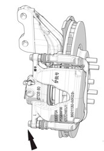
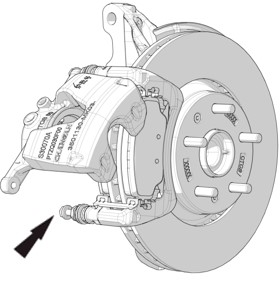
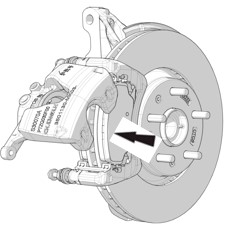

Снятие
1. Снять шины. Ссылка: Колеса и шины
2. Снять корпус переднего суппорта. Ссылка: Передний тормозной суппорт
3. Отвернув болт крепления нижнего осевого пальца суппорта, повернуть суппорт вверх и снять фрикционную накладку тормоза.


Установка
1. С помощью инструмента для вдавливания поршня сжать поршень рабочего тормозного цилиндра.

2. Установить фрикционные накладки тормоза.
При замене фрикционных накладок их необходимо заменять парами (то есть внутреннюю и внешнюю накладки одновременно).
3. Установить новые болты крепления осевого пальца суппорта, момент затяжки: 31 - 38 N.m.
4. С силой нажать на педаль тормоза более двух раз.
5. Проверить уровень тормозной жидкости, при необходимости долить.
При установке фрикционных накладок необходимо строго выполнять вышеуказанные операции, проверить толщину диска, чтобы убедиться, что толщина тормозного диска соответствует норме.